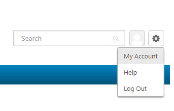

Cabiar idioma a español
Paso 1
Desplácese hasta el icono de engranaje en la esquina superior derecha de la página y seleccione Mi cuenta (My Account).
Paso 2
Seleccione su idioma preferido en la pestaña “Mostrar idioma” (Display Language).
Paso 3
Se le pedirá que cierre la sesión y vuelva a iniciar sesión en el portal después de “Guardar” para actualizar el paquete de idioma.